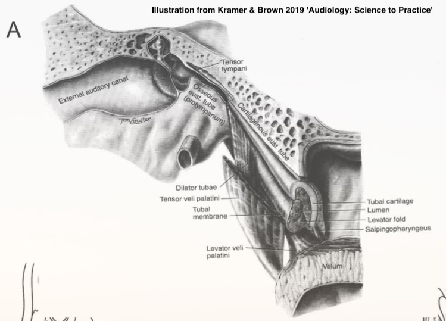
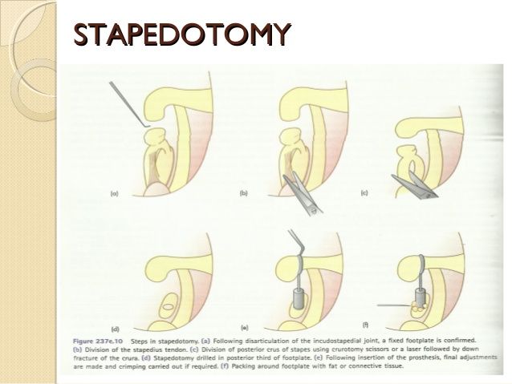

This will look a lot like the midterm, except with more questions
It will be cumulative, but weighted towards the post-midterm material
Students wanting accommodations should reach out to me ASAP
The Chapter for this week is amazing
… as was the audiogram reading chapter
You’ll want to make sure you read it
… and there’s no need to repeat the material aloud!
Treating Recurring Otitis Media
Treating Eustachian Tube Dysfunction
Treating Otosclerosis
Treating Acoustic Neuroma
Cochlear Implant Basics and Installations
An infection of the middle ear
Often caused by bad eustachian tubes or inflammation
Systemic Antibiotics
Myringotomy
Tympanostomy Tube Installation
Numb the eardrum by using phenol
Cut a slit in the tympanic membrane
Insert the tube into the slit
https://www.youtube.com/watch?v=hFUQs6ae6Fo
For kids, general anesthesia
For adults, moving around
Medial Migration of Tympanostomy Tube
… and more!
The Eustachian tube doesn’t adequately open
Chronic ear pressure and otitis media

Enter through the nose
Insert a balloon catheter
Inflate catheter to expand the opening
Remove catheter
The below link is a CGI rendering of the procedure
https://www.youtube.com/watch?v=hJMort6YCI4&feature=emb_title
https://www.youtube.com/watch?v=dBln0VwifP8

Carotid Complications
Inability to access the tube
Overdilated Eustachian tube
Abnormal growth and stiffening around the stapes, freezing it in place
The treatment for this is removal and replacement of the stapes
Or the removal of everything but the footplate, with a hole made over the oval window for a prosthesis

https://www.youtube.com/watch?v=N6QEGuFgDIc
Dislocation of the incus
Perilymph rupture
Other conductive hearing loss
With special thanks to Dr. Frank Farokhi
Technically a schwannoma occurring on the 8th nerve
Occurs when one type of cell (‘Schwann Cells’) grows out of control on the 8th nerve
These can occur spontaneously, or as a symptom of neurofibromatosis
They don’t ‘eat into’ the nerve
They compress the nerve within the range
Compression hurts bloodflow, which prevents action potentials, leads to demyelination, and damage
Once removed, full nerve function can be restored!

Where is the tumor located?
Do we have evidence of nerve damage, or just compression?
Targeted beams of radition to kill the tumor tissue only
Most often used when the tumor is far from the brain
Used to preserve hearing
Go in from the back of the head, pull aside the brain, and pull the tumor

https://www.youtube.com/watch?v=ialtKy3cuPU
“Yeah, hearing’s gone already, let’s avoid risk to the brain and facial nerve by going in through the cochlea”
This destroys all hearing in that ear.
https://www.youtube.com/watch?v=Trz5RG2nsgM
Roughly all of them
Facial Nerve Damage
Damage to the 8th nerve
Hearing loss due to cochlear damage
… because there are many more disorders
But these were an interesting subset of disorders
With particularly interesting surgical approaches
… but one of the most well known surgical interventions is…
“Why try to restore the outer ear, middle ear, or organ of corti, when we could just stimulate the spiral ganglion ourselves?”
“Let’s do all the transduction and processing ourselves and just send signals down the nerve electrically via a wire in the cochlea!”
We could very easily send a binary signal
But how do we get frequency information?
The electrode has a series of contact points along its length
The electrode is inserted into the scala tympani
Each contact point stimulates a different point along the basilar membrane
The brain naturally interprets stimulation from different contact points as frequency differences!


Source (Dhanasingh and Jolly 2017)
External hardware analyzes incoming sounds
The sound is broken down into frequency bands
The CI converts these into electric pulses in different bands
These bands correspond to signals from channels on the electrode, positioned according to tonotopic organization
“How many electrodes do we have to stimulate the cochlea?”
You want enough channels to send rich data
This number ranges from 12 to 24 in modern CIs
We don’t need a middle ear, because sound is picked up externally
We don’t need OHCs because BM/TM movement doesn’t matter
We don’t need IHCs because the transduction’s happening externally
We go straight from the CI’s microphone to the spiral ganglion!
There are only three makers, with their devices being roughly equivalent
They’re often done unilaterally
Costs can range from $30,000-100,000 easily
… and installing them is a complicated procedure
Drill a hole into the temporal bone into the middle ear
Open the round window (generally!)
Insert the electrode (gently)
Differences in cochlear anatomy
Damage, malformation, or trauma to the cochlea
This can affect insertion depth, proximity to nerves, and more
This is one of the many variables in CI outcomes
Tuck the sub-dermal part into a skin pouch
Fill the drilled hole with grafted tissue
Stitch them up
https://www.youtube.com/watch?v=PFYvKY8xgUQ
CI’s have a lifetime of around 20 years
Trauma to the cochlea during implantation is Bad™
Yet another reason why this isn’t a ‘miracle cure for all Deaf people’
There are many surgical interventions which can be helpful
This is very fiddly, detailed, and precise work
CIs are amazing bits of technology
… and installing them is very difficult